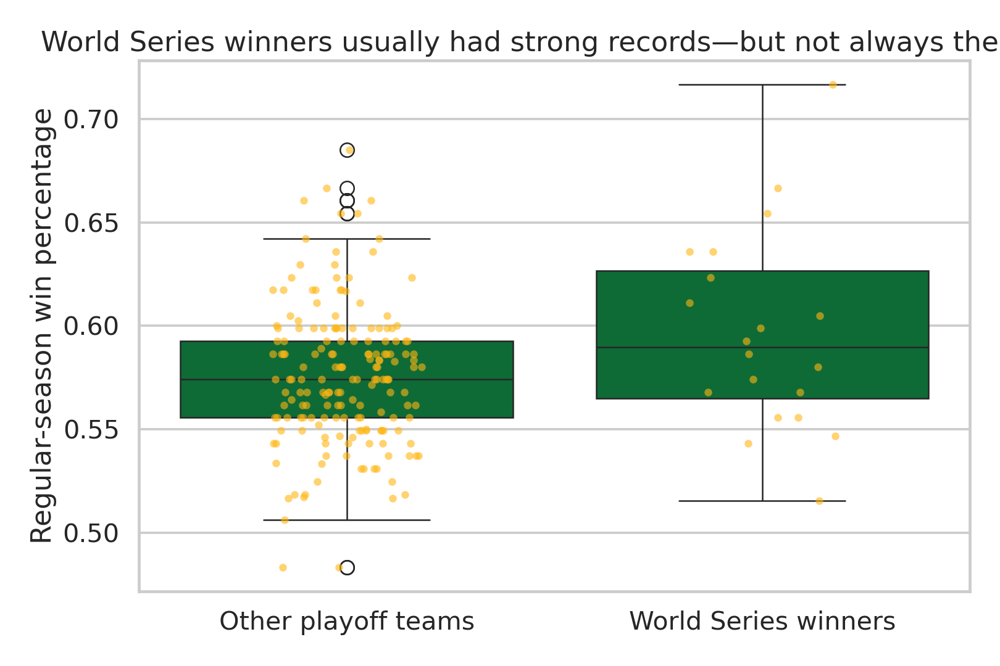
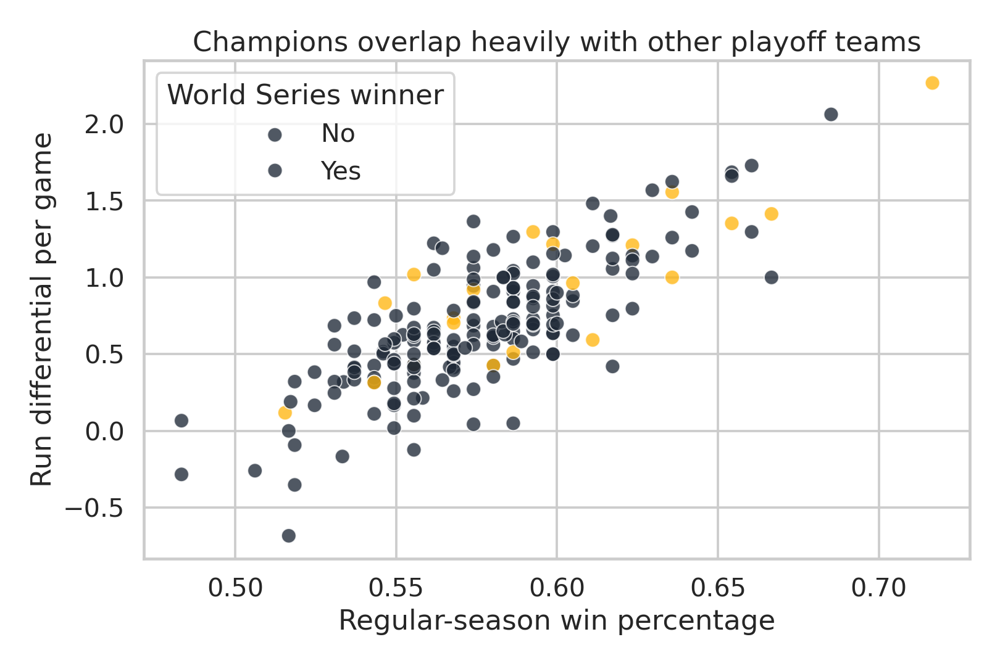
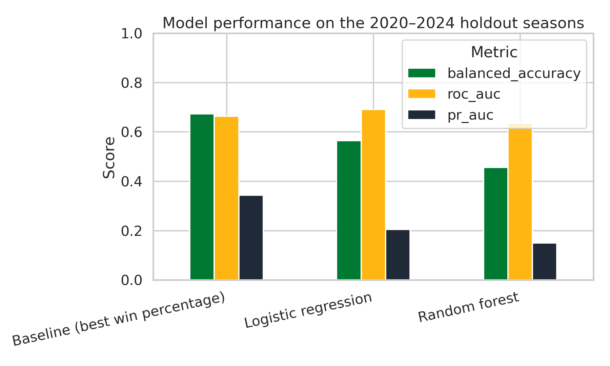
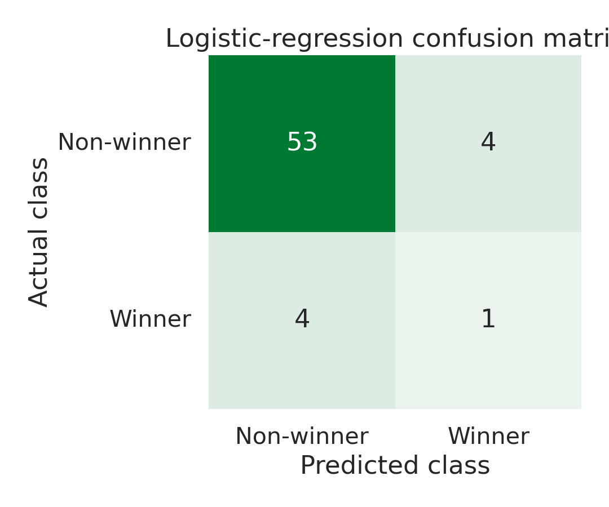

Source
Sean Lahman’s Baseball Database team table, assembled from two credited GitHub snapshots and limited to 2005–2024.
DTSC 2301 · Machine-Learning Portfolio Project
I studied 198 MLB playoff team-seasons from 2005–2024 to test whether win percentage, run differential, hitting, pitching, and baserunning statistics can identify the eventual champion.
01 · Problem definition
How accurately can an MLB playoff team’s regular-season win percentage and performance statistics predict whether it will win the World Series, using data from the 2005–2024 MLB seasons?
This is a binary-classification problem. Each observation represents one playoff team in one season. The target equals 1 for the World Series champion and 0 for every other playoff team. Fans and analysts may benefit from understanding which regular-season signals carry into October, but this project is educational—not gambling advice.
02 · Background and context
Win percentage summarizes a team’s full regular season. Run differential adds context by comparing runs scored with runs allowed, a relationship long connected to team quality through baseball’s Pythagorean expectation. OPS combines on-base percentage and slugging percentage into one measure of offensive production. Still, postseason series are short, rosters change, and MLB expanded the playoff field during this period. Those factors make the champion difficult to predict from season totals alone.
03 · Data description
Sean Lahman’s Baseball Database team table, assembled from two credited GitHub snapshots and limited to 2005–2024.
world_series_winner: 1 if the team won the World Series and 0 otherwise.
Win percentage, run differential per game, runs per game, OPS, home runs per game, stolen bases per game, ERA, and WHIP.
20 winners and 178 non-winners. This imbalance makes accuracy alone misleading.
04 · Data understanding
Champions averaged a .597 regular-season winning percentage; other playoff teams averaged .576. The difference supports the basic idea that stronger regular-season teams have an advantage. The wide overlap also shows why win percentage cannot determine October results by itself.


05 · Preparation and feature selection
06 · Training and models
The training set contains the 2005–2019 seasons (136 playoff teams). The untouched test set contains 2020–2024 (62 playoff teams). Keeping entire seasons together prevents same-season information from appearing on both sides of the split.
07 · Evaluation and selection
| Method | Balanced accuracy | Precision | Recall | F1 | ROC-AUC | PR-AUC |
|---|---|---|---|---|---|---|
| Best-win-% baseline | .674 | .400 | .400 | .400 | .663 | .344 |
| Logistic regression | .565 | .200 | .200 | .200 | .691 | .204 |
| Random forest | .456 | .000 | .000 | .000 | .635 | .150 |
Main result: The baseline correctly selected 2 of 5 champions. Logistic regression selected 1 of 5, and random forest selected none. Logistic regression had the highest ROC-AUC (.691), showing some ranking signal, but added complexity did not beat the simple rule when choosing one champion per season.

08 · Interpretation
I select logistic regression as the final trained model because it produced the strongest overall ranking and is easier to explain than the random forest. However, the best-win-percentage baseline remains the better practical rule in this five-season test. Feature values describe associations, not causes, and correlated inputs can make individual coefficients unstable.
The confusion matrix shows the difficulty directly: logistic regression found only one actual champion while producing four incorrect champion selections.

09 · Limitations, ethics, and reflection
Twenty seasons supply only 20 champions. One or two seasons can materially change the reported metrics.
The shortened 2020 schedule and changing postseason formats affect comparability even after converting totals to rates.
Season totals omit injuries, roster changes, rotation availability, matchups, travel, and short-series randomness.
Incorrect predictions could mislead fans or bettors, so this model should not support gambling, financial, or personnel decisions. My biggest takeaway is that a model can be technically sound and still fail to improve on a simple baseline. Reporting that failure honestly is more useful than overstating the result.
10 · Code, citations, and transparency
Tool: OpenAI ChatGPT/Codex, GPT-5 family (accessed September 2026). Purpose: assistance with code organization, debugging, explanatory drafting, and website formatting. Nick Hawkins selected the topic, reviewed the analysis, and is responsible for verifying and explaining the work. AI was not used as a data source; the numerical results were produced by the Python code in this repository.